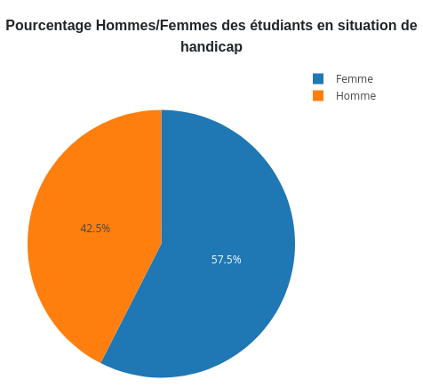
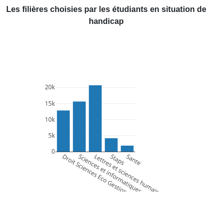
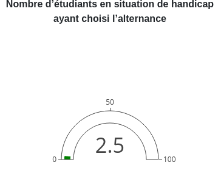
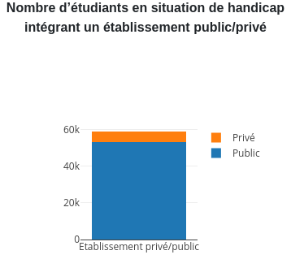
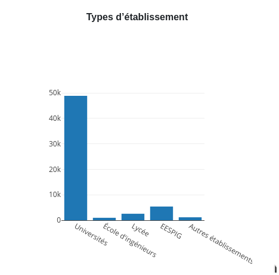
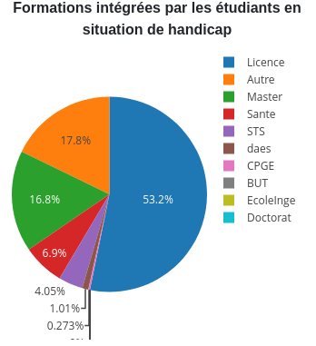

Choix des indicateurs
Inclure les étudiants en situation de handicap dans l'enseignement supérieur est essentiel pour
garantir l'égalité
Comprendre comment ces étudiants sont répartis aide à repérer les différences et à améliorer les politiques pour
mieux les soutenir
Cela montre l'engagement de l'institution pour une éducation accessible à tous






Pertinence des indicateurs du Dashboard
Pourcentage Hommes/Femmes des étudiants en situation de handicap : Savoir s'il y a plus d'hommes ou de femmes
parmi les étudiants handicapés aide à faire en sorte que tout le monde ait les mêmes chances à l'école.
Identifier les matières qui attirent le plus les étudiants handicapés aide les écoles à adapter les cours pour
répondre à leurs besoins spécifiques, favorisant ainsi leur plein épanouissement dans leur parcours scolaire.
Pourcentage d’étudiants en situation de handicap ayant choisi l’alternance : Comprendre combien d'étudiants
handicapés choisissent de travailler tout en étudiant aide à savoir s'ils ont les mêmes opportunités que les
autres pour trouver un emploi.
Compter combien d'étudiants handicapés vont dans des écoles publiques ou privées aide à voir si toutes les
écoles sont accessibles pour eux.
Découvrir dans quels types d'écoles étudient les étudiants handicapés révèle les divers environnements
éducatifs auxquels ils ont accès, ce qui montre l'importance de l'accessibilité.
Regarder les formations que choisissent les étudiants handicapés montre où il y a encore des obstacles à
surmonter pour qu'ils aient les mêmes opportunités que les autres dans leurs études.